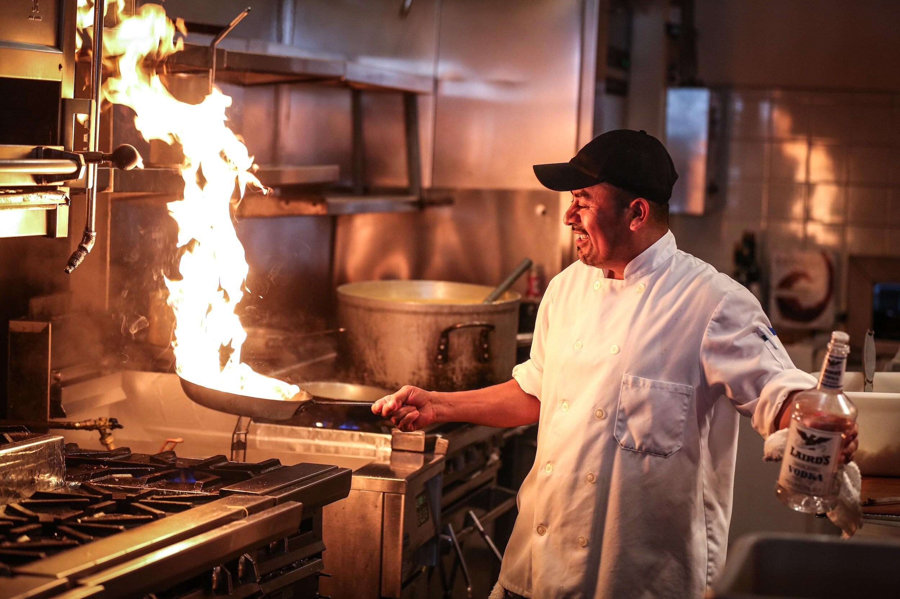
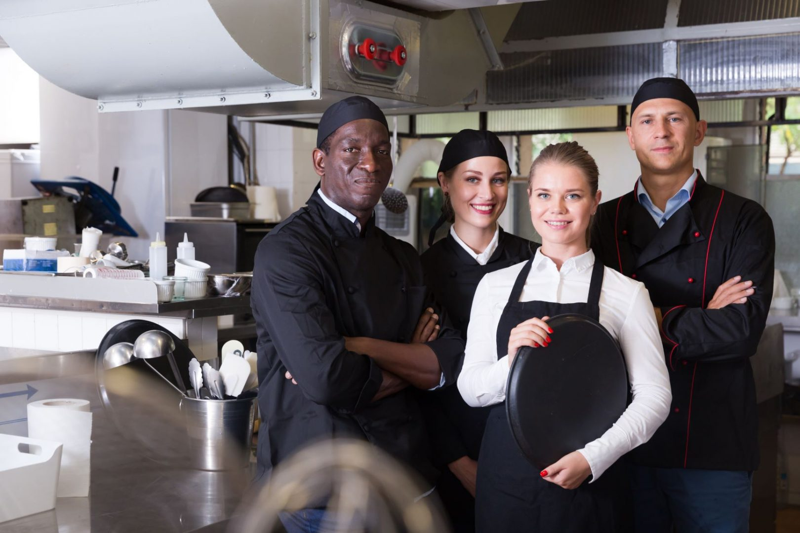

Why Join Culinary Harbor?
Welcome to Culinary Harbor, where passion meets innovation, and excellence is a way of life. Joining our team opens doors to a world of exciting opportunities and rewarding experiences. Here's why you should make Culinary Harbor your professional home:
Exciting Work Environment
Immerse yourself in a dynamic and thrilling culinary environment that encourages creativity and embraces innovation. Every day at Culinary Harbor brings new challenges and opportunities to showcase your skills.
Our kitchen is a vibrant space where culinary talents are nurtured, and you'll find a sense of accomplishment in every dish you create. The fast-paced yet collaborative atmosphere fuels your passion for culinary excellence.
Career Growth Opportunities
At Culinary Harbor, we believe in investing in the professional development of our employees. Grow your culinary career with us through diverse opportunities for advancement, skill enhancement, and continuous learning.
Whether you're an aspiring chef or an experienced culinary professional, our commitment to career growth means you'll have the chance to explore new roles, take on leadership responsibilities, and expand your culinary horizons.
Team Collaboration
Join a supportive team that values collaboration and teamwork. At Culinary Harbor, we celebrate the power of collective effort. Work alongside skilled professionals who share your passion for culinary excellence, creating an environment where success is a shared achievement.
Our kitchen is not just a workplace; it's a community of culinary enthusiasts who thrive on shared goals and mutual support. Collaborate with talented chefs and culinary experts to create extraordinary dining experiences.